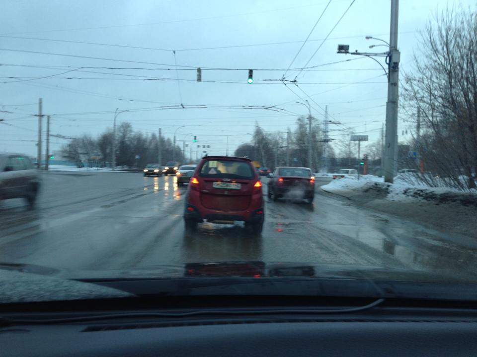

На фотке плохо видно, но у машины передо мной на номерной рамке написано СПАСИ И СОХРАНИ, под логотипом приклеена христограмма (это такая штука с буквами I.C.X.C., сам только что нагуглил).

Дополняют все эти декорации алтаря знаки «Начинающий водитель» и «У».
Конечно, левый поворот она включила только перед тем как поворачивать, а не заранее.